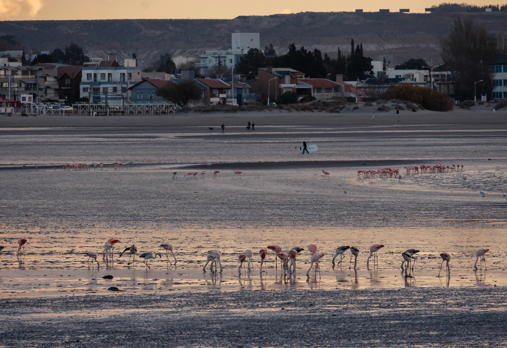
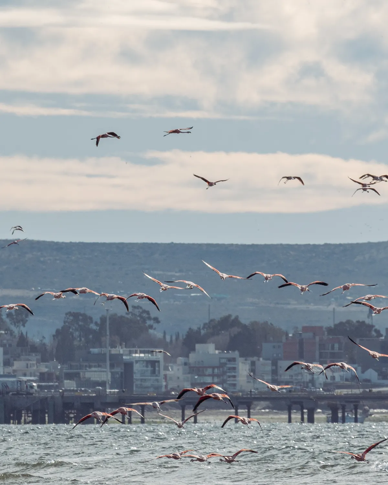

Integrar, representar y fortalecer a los Consejos Pastorales de la provincia del Chubut, promoviendo la unidad cristiana, la cooperación institucional, la defensa de la libertad religiosa y el desarrollo de acciones conjuntas que contribuyan al bienestar integral de la sociedad.
Federación de Consejos Pastorales · Chubut
Unidad pastoral, fortalecimiento institucional y compromiso con nuestra comunidad.
Integramos, representamos y fortalecemos a los Consejos Pastorales de la provincia, respetando la autonomía de cada entidad.
Constituida 1 de abril de 2026
Sede fundacional Puerto Madryn
Organización de segundo grado
Quiénes somos
La voz organizada de los Consejos Pastorales del Chubut.
La Federación de Consejos Pastorales de la Provincia del Chubut es una organización civil de segundo grado, de base cristiana evangélica y sin fines de lucro, constituida con el propósito de integrar, representar, coordinar y fortalecer institucionalmente a los Consejos Pastorales y entidades cristianas evangélicas de la provincia.
Promovemos la articulación entre los Consejos, generamos espacios de participación y diálogo, impulsamos proyectos conjuntos y ejercemos la representación institucional de las entidades federadas ante organismos públicos, privados y organizaciones de la sociedad civil.
Trabajamos respetando plenamente la autonomía jurídica, administrativa, espiritual y ministerial de cada institución integrante.

Consolidarnos como una institución de referencia y representación de los Consejos Pastorales de la provincia del Chubut, reconocida por su compromiso con la unidad, la transparencia, el fortalecimiento institucional y la capacidad de generar soluciones y oportunidades que potencien la labor de las iglesias en cada comunidad.
Nuestros valores
Los principios que compartimos.

Nuestra historia
Nace del diálogo entre pastores de toda la provincia.
La Federación surge de un proceso de diálogo, integración y cooperación entre distintas organizaciones pastorales del Chubut, motivadas por la necesidad de contar con una estructura que fortalezca la representación y el trabajo conjunto de los Consejos Pastorales.
- 1 de abril de 2026
En Puerto Madryn, representantes de distintas instituciones pastorales constituyen formalmente la Federación.
- 1 de noviembre de 2026
Acto institucional de asunción de autoridades en Puerto Madryn: comienza una nueva etapa de organización e integración.
- Lo que viene
Sumar Consejos de las distintas localidades y desarrollar programas espirituales, institucionales y comunitarios.
Instituciones fundadoras
- Asociación Civil de Pastores Unidos (ACPU)
- Consejo Pastoral de Esquel
- Consejo Pastoral de Puerto Madryn
- Cofraternidad de Pastores de Puerto Madryn
Áreas de trabajo
En qué trabajamos.
Consejos Pastorales
Una red que crece en toda la provincia.
Tocá una localidad del mapa para ver su Consejo. A medida que se afilian nuevos Consejos, se suman al mapa y al directorio desde el panel.
Consejo integranteLocalidad por sumar
Autoridades
Comisión Directiva.
Las fotos y las reseñas de cada autoridad se cargan desde el panel.
Órgano de Fiscalización
Biblioteca en línea
Documentos y recursos.
Material institucional, de capacitación y de consulta. Algunos son abiertos a todos y otros solo para Consejos federados. Los de abajo son de ejemplo.
Convenios y beneficios
Beneficios para los Consejos federados.
Convenios con organismos públicos y privados para los Consejos y sus iglesias. Cada beneficio se carga desde el panel con sus condiciones.
Prensa y noticias
Novedades de la Federación.
Un paso histórico hacia la unidad pastoral en Chubut
El 1 de noviembre de 2026, en la ciudad de Puerto Madryn, se realizó el acto institucional de asunción de las autoridades de la Federación de Consejos Pastorales de la Provincia del Chubut.
Leer más
Esta iniciativa representa un importante avance hacia la integración, organización y representación institucional de los Consejos Pastorales de nuestra provincia.
La Federación nace con el compromiso de fortalecer la unidad, respetar la autonomía de las instituciones integrantes y promover acciones conjuntas que contribuyan al bienestar espiritual y social de nuestra comunidad.
La Federación avanza en la creación de una red provincial de Consejos Pastorales
Con el propósito de fortalecer la integración territorial, la Federación impulsa la creación de un registro provincial de Consejos Pastorales que permita conocer, vincular y acompañar a las organizaciones pastorales de las diferentes localidades del Chubut.
Leer más
El objetivo es generar herramientas de cooperación, facilitar la comunicación institucional y promover el desarrollo de iniciativas conjuntas en beneficio de las iglesias y la comunidad.
Afiliación
Sumá tu Consejo Pastoral a la Federación.
Solicitud de afiliación para Consejos Pastorales y entidades que reúnan los requisitos del estatuto. Completá los datos y adjuntá la documentación: la solicitud queda pendiente hasta su aprobación institucional.
- Representación institucional ante organismos públicos y privados
- Acompañamiento jurídico y administrativo
- Capacitación del liderazgo pastoral
Donaciones
Sumate a transformar vidas.
Tu aporte va a permitir acompañar a quienes más lo necesitan y sostener los programas sociales y comunitarios de la Federación.
Próximamente
Las donaciones se habilitan cuando la Federación tenga su cuenta institucional y la documentación correspondiente. Los fondos y registros van separados de los de cada entidad federada.
- info@fecopach.com.arInformación y consultas generales
- tesoreria@fecopach.com.arAdministración económica y financiera
- prensa@fecopach.com.arComunicación institucional y medios
- donaciones@fecopach.com.arDonaciones y aportes solidarios